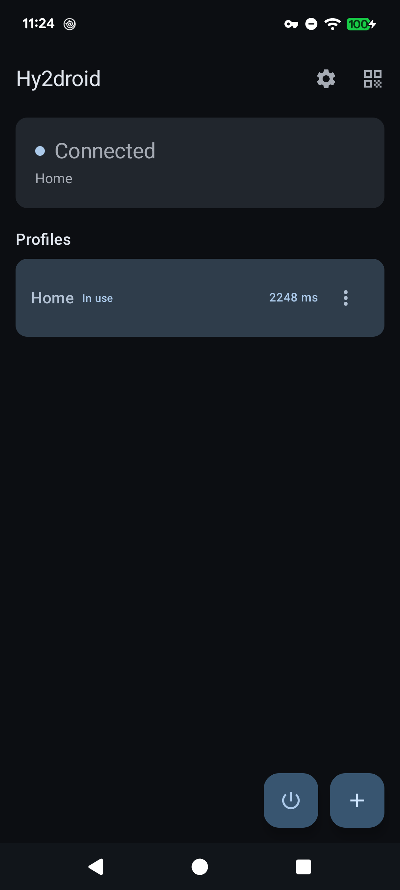

Fast where it shows
QUIC fastOpen is on by default, so a new connection skips a round trip. A 20-second heartbeat keeps the session warm without waking the radio every few seconds.
Paste a hysteria2:// link, scan a QR code, tap Connect.
A full-tunnel VpnService with the official Go core, a
Material 3 interface, and no root or Google Play Services required.

Everything a share link already carries, in a UI that tells you what went wrong instead of dumping a log.
QUIC fastOpen is on by default, so a new connection skips a round trip. A 20-second heartbeat keeps the session warm without waking the radio every few seconds.
Full-tunnel routes for both families. IPv4 literals, bracketed IPv6 literals, and hostnames work, including nodes that only publish an A or only an AAAA record.
Paste a hysteria2:// link, scan a QR code offline, or open a link from the browser. Switch profiles while connected; the tunnel is rebuilt for you.
Wi-Fi to mobile and back restarts the core in about a second instead of waiting out the 30-second QUIC idle timeout. The TUN and tunnel engine stay up.
Send apps outside the VPN by package. Optionally keep RFC1918, link-local, CGNAT and multicast traffic local, so printers, NAS boxes and casting keep working.
Refuse flows by protocol and port inside the tunnel. QUIC on UDP/443 is blocked by default because Hysteria cannot accelerate it; a blocked TCP port gets an immediate reset.
The status card turns the core log into a sentence: name does not resolve, TLS failed, password rejected, nothing came back, obfuscation mismatch. The raw line stays in the diagnostic export.
Profiles live in the app's private DataStore. No account, no analytics, no crash SDK. Auth and obfuscation passwords are masked in backups and in the exported log.
Dynamic colour, dark and light themes, a Quick Settings tile, and seven UI languages.

The APKs are signed and built by CI from this repository's source. No account or store is involved.
Use arm64-v8a on a modern phone. The universal APK is larger but works on every supported ABI.
Android asks once whether the browser or file manager may install unknown apps. Downloading again is safe if the first file was truncated.
Open the app, tap +, then paste a share link or scan the QR code from your provider. Nothing is uploaded anywhere.
Accept the VPN prompt. Android 17 also asks for local-network access once; refusing still lets public nodes work.
Upgrading from a debug build? Debug and release APKs use different keys, so Android refuses the update. Uninstall the debug copy first; profiles stored in it are removed with it. The release signing certificate's SHA-256 fingerprint is published below so you can verify a download.
Hy2droid is a local proxy client, not a service. There is no backend to collect anything.
Server, password, SNI and obfuscation key live in the app's private storage. Auto Backup masks the secrets; the diagnostics export redacts them too.
No Firebase, no Play Services, no advertising ID, no third-party crash reporter. The only network connections are the ones the tunnel makes to your server.
The default answers A queries inside the tunnel and forwards the name to your server; a forwarded mode and custom IPv4/IPv6 resolvers are one switch away.
For people who want to verify before installing.
VpnService, IPv4 + IPv6 routesShort answers, with the caveats that actually matter.
Yes. Hy2droid is free software under AGPL-3.0. The full source, build scripts and release workflow are in the repository. You pay only for your own server, if you run one.
Yes, as long as the phone's current network can reach that family. IPv6 literals are rendered as [addr]:port internally, and AAAA-only names work. One caveat comes from the Hysteria core: for a dual-stack hostname it prefers an A record and does not fall back to IPv6 if that path is broken, so use an AAAA-only name or the IPv6 literal when IPv4 is the broken side.
arm64-v8a covers almost every phone from the last several years. armeabi-v7a is for old 32-bit devices, x86_64 for emulators and a few tablets, and the universal build works anywhere but is about 45 MB.
Almost always one of two things: the download was truncated, or an older copy signed with another key is installed. Re-download from the release page; if that does not help, uninstall the previous build (a debug APK cannot be updated by a release APK).
Neither. It uses Android's VpnService API, so it works on de-Googled ROMs. The QR scanner uses CameraX and ZXing locally; no network service is involved.
Not yet. Signed APKs are published on GitHub Releases, and a signed AAB is produced by the release workflow for a future Play listing. F-Droid inclusion needs the bundled Go core and native tunnel library to be rebuilt from source inside F-Droid's build server, which is a separate project.
Hysteria 2 only. This is deliberately a focused client: a profile is the handful of values a share link carries, not a general proxy configuration.
The default answers A queries inside the tunnel and has no AAAA answers by design; it is the fastest option for the common case. If you need IPv6-only destinations, turn off “Answer DNS in the tunnel” in Settings → Network and use forwarded resolvers (or set your own). This does not affect connecting to IPv6-only servers.